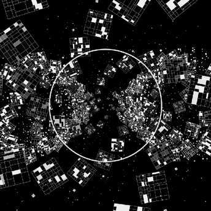

- 类别 Category
- 空间影像 Spatial Media
- 场景 Context
- 公共艺术装置 Public art installation
- 内容 Content
- 装置投影 / 空间影像 Installation projection / Spatial media
项目概述
Overview
投影沿装置周围的地面展开，将图像延伸到观众可以进入的公共空间。 Projected imagery extends across the ground around an installation and into a public space visitors can enter.
项目图片
Selected Media
装置现场与投影图像。 The installation and projected imagery.

项目署名
Credits
- 项目参与 Contributor
- Lin Xuanzu / 林玄祖